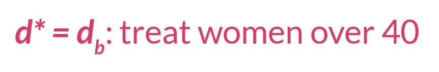

n <- 500
W <- runif(n, 1, 99)
A <- rbinom(n, 1, prob = abs(W/100))
Y <- rnorm(n, 10) + rnorm(n, 2*A) + rnorm(n, 50*W) - rnorm(n, .1*A*W)
df <- data.frame(W, A, Y)Developing and optimizing optimal treatment rules (OTRs) is a fast-growing topic in the medical research community. A treatment rule is a decision for treatment based upon a person’s characteristics. The intuition behind this is that not all individuals will respond to a treatment in the same way. We can exploit these heterogeneous effects and develop personalized rules which provide benefit a greater number of people.
The methods of OTRs are rooted in principles of causal inference, or using data to inform us about what would have happened in a hypothetical world in which different interventions had occurred. This post walks through the basic statistical intuition for OTRs. Each explanation is accompanied by mathematical notation and a small graphic to convey equivalent meaning.
Although this post is introductory, it assumes basic knowledge in causal inference, such as counterfactual outcomes, assumptions for causal identification, Average Treatment Effect, and G-computation/g-formula.
Table of Contents
üó∫Ô∏è The Big Picture of OTRs
In this first section, we will translate the concept of developing and optimizing an OTR into mathematical notation.
- We will start with a standard set-up: we have a matrix of observed data \(O\) which includes our outcome \(Y\), the exposure (i.e. treatment, medicine, etc.) we want to study \(A\), and other covariates \(\textbf{W}\). Each row is an observation. We can denote these columns of data, which are random variables, as \(O = (\textbf{W}, A, Y)\).

- Now, consider we create some function, \(d\), which takes baseline confounders \(\textbf{W}\) and outputs a treatment assignment \(A\). We can write this mapping function, or treatment rule, in mathematical notation as:
\[d: \textbf{W} \rightarrow A\] This is equivalent to a function you could write in R or Python which takes a matrix W and outputs a vector of treatment assignments A, which may or may not be the same treatment assignment as what each observation actually received.
- We can then think about the counterfactual outcome1 for each row, or observation, under the treatment rule \(d\). In other words, we ask, *“what would have happened in a hypothetical world where the treatment rule* \(d\) was applied?”
1 Recall that a counterfactual describes a hypothetical world where a unit received a certain intervention or treatment, which might be different from the treatment they actually received
Let’s denote this vector of counterfactual outcomes as \(Y(d)\).

- The optimal OTR will maximize the expected counterfactual outcome, or \(\mathrm{E}[Y(d)]\), across the entire population. We can write that using \(\mathop{\mathrm{arg\,max}}\), which means we want to know which argument will return the highest value of a function. In this use-case, we want to know what treatment rule \(d\) returns the highest expected value of the counterfactual outcome, \(\mathrm{E}[Y(d)]\).
\[\mathop{\mathrm{arg\,max}}_d \mathrm{E}[Y(d)]\]
- We can call whatever function \(d\), or \(d(\textbf{W})\), that maximizes this expected counterfactual outcome for the population \(d^*\). This \(d^*\) is our OTR.

üìà Estimating the OTR
There are many ways to estimate \(d^*\). One of the most common ways begins by estimating the Conditional Average Treatment Effect (CATE).
You have probably heard of the Average Treatment Effect (ATE), which is the mean difference in outcomes in a world in which every unit receives the exposure compared to a world in which no unit receives the exposure. In potential outcomes notation, \(ATE = \mathrm{E}[Y^1-Y^0]\). The CATE is the same formula and description, but within covariate strata \(W\).
\[CATE = \mathrm{E}[Y^1-Y^0|\textbf{W}]\]
Under standard causal assumptions2, the CATE for a binary exposure is identifiable under the following formula:
2 This post is focused on estimation and therefore does not detail the requirements for causal identification, but here I refer to the assumptions of consistency, exchangeability, and positivity.
\[\mathrm{CATE}(W) = \mathrm{E}[Y|A=1, \textbf{W}] - \mathrm{E}[Y|A=0, \textbf{W}]\]
We could estimate the CATE using G-computation3:
3 If you’d like a review on G-computation, check out this visual guide.
- Fit a regression for \(\mathrm{E}[Y|A,\textbf{W}]\).

- Use the model fit from Step 1 to obtain predicted estimates for \(Y\). Use two different datasets: one where all observations are changed to have \(A=1\), and one where all observations are changed to have \(A=0\).
\[\hat{E}[Y|A=1, \textbf{W}]\]

\[\hat{E}[Y|A=0, \textbf{W}]\]

- Compute the difference of the quantities from Step 2.
\[\widehat{CATE} = \hat{E}[Y|A=1, \textbf{W}] - \hat{E}[Y|A=0, \textbf{W}]\]
Now, we could say our optimal treatment rule is to give treatment if the value of \(CATE\) for that person is positive, indicating a positive effect of treatment on the outcome \(Y\). Likewise, if the value is negative or 0, indicating a negative or neutral effect on the outcome \(Y\), that unit would not receive treatment under the OTR.
\[\text{Treatment rule} = \mathbb{1}{ \{CATE > 0} \}\]
üñ•Ô∏è R simulation
Let’s take a look an R simulation for the simple estimation of the \(d^*\) we just described. We can first simulate data of n = 500 rows, where we have only one confounder W, a binary treatment A which depends on W, and an outcome Y which is continuous and depends on W and A.
We’ll run a regression for a saturated linear regression model of \(\mathrm{E}[Y|A,\textbf{W}]\), then obtain predictions on datasets where A is changed to 1 and 0 for all rows. We can then compute the CATE as the difference between these predictions.
fit <- glm(Y~A*W)
E_Y1 <- predict(fit, newdata = data.frame(A = 1, W))
E_Y0 <- predict(fit, newdata = data.frame(A = 0, W))
CATE <- E_Y1 - E_Y0Finally, our optimal treatment rule will be to treat any unit with CATE > 1. If we plot the distribution of CATE in intervals of length 1, we can visually see there is benefit for about 1/4 of units in our simulated population.
library(tidyverse)
data.frame(CATE) |>
mutate(d_star = ifelse(CATE > 0, "Treat", "Do not treat")) |>
ggplot(aes(CATE,fill=d_star)) +
geom_bar() +
scale_x_binned() +
theme_bw() +
scale_fill_manual(values = c("#f2696f","#4984b0")) +
labs(x="CATE", y = "Count", fill = "Treatment Rule", title="Distribution of CATE")
Improving estimation of \(d^*\)
There are many other ways to estimate the \(CATE\) with improved statistical properties, e.g. double robustness. We could also estimate \(d^*\) directly instead of first estimating the \(CATE\).
We can extend either of these ideas to longitudinal settings, studies with clustering, etc. I’ve listed some of the resources I’ve used to learn about developing OTRs below. As always, I welcome feedback and/or suggestions of additional resources I can include.
Further reading
These concepts are introductory, so any paper on “optimal treatment rules”, “individualized treatment rules”, or “heterogeneous treatment effects” should review the ideas discussed here in their introductions.
- This Hoogland et al. tutorial gives an introduction and code for OTRs.
- This Wang et al. paper offers a clear mathematical introduction on OTRs.
- Brady Neal’s causal course Youtube series (Chapter 6.2) discusses Conditional Outcome Modeling (what the CATE estimator falls under) over a 10 minute video.
- This Angus and Chang JAMA Statistics and Research Methods paper gives an overview of a few ways to compute heterogeneous treatment effects for individualized treatment rules.
- Lately I’ve been interested in this recent methods paper by Edward Kennedy. It discusses a way to evaluate the CATE using doubly robust estimation, and gives several other foundational papers in the introduction.
- This
Rblog post about heterogeneous treatment effects also may be useful for thinking through these issues with real data. [Lina Montoya](http://lina-montoya.com/)'s [paper](https://arxiv.org/abs/2101.12326) on using the [Superlearner algorithm](https://www.khstats.com/blog/sl/superlearning.html) to estimate the CATE is super interesting and contains many great references to other OTR papers- This Pirracchio et al. paper is an interesting application of the Superlearner optimal treatment rule in a critical care setting (one of my favorite areas of research!)
I’ll continue to add resources to this list as I discover them. Please reach out if you have recommendations of papers or tutorials (yours or others!) to add to this list.
Acknowledgments
Thanks to my colleague Iván Díaz for explaining OTRs to me in this way, and for reviewing this post.